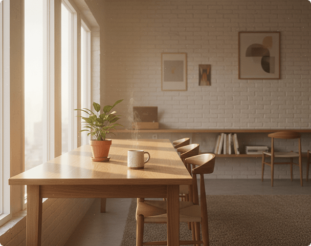
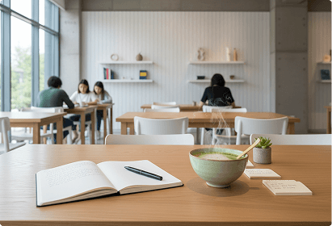
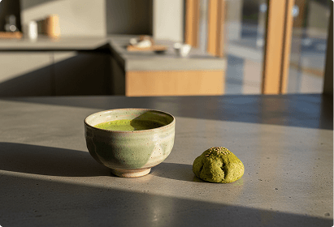
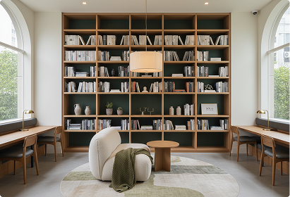

Quiet minds build great things.
Sola is a dedicated silent cafe designed exclusively for deep focus, academic pursuit, and clean thinking. Enjoy curated herbal tea, high-speed fiber internet, and ergonomic seating.
Explore the space
Designed for flow state
Every detail curated to elevate your cognitive endurance.
Silent Zones
Architecturally sound acoustic paneling ensures absolute peace. Your train of thought remains entirely uninterrupted.
Sustained Focus
Gb-speed dedicated fiber connection, individual power outlets at every warm oak workstation, and ergonomic task lighting.
Clean Nourishment
Slow-poured drip coffee, artisanal matcha, and subtle nutrient-dense botanicals designed to keep you alert and calm.
A space for your mind to thrive



Quiet hours, warm lights, and focused minds.
Explore our menuHours of Solitude
Sanctuary Location
120 Serenity Place, Suite BEast Village, NY 10003